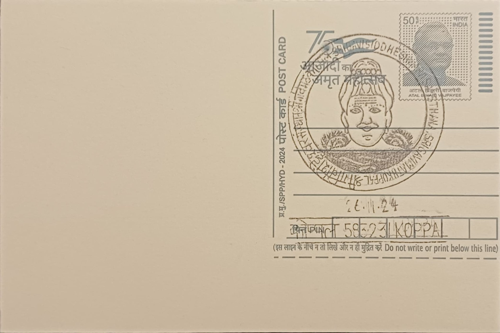

Sri Gavi Siddeshwar Samsthana Sri Gavimath
ಶ್ರೀ ಗವಿ ಸಿದ್ದೇಶ್ವರ ಸಂಸ್ಥಾನ ಶ್ರೀ ಗವಿಮಠ


The institution takes its name from the Kannada word "gavi," meaning cave, referring to the natural rock cavern around which the math grew on one of the three hills west of Koppal town. Tradition holds that the site was already used as a place of meditation long before it developed into an organised monastery, and local accounts trace the founding of the Veerashaiva-Lingayat institution to a saint named Shri Rudramuni, whose ascetic presence in the cave is said to have established it as a seat of worship dedicated to Siddeshwara, a form of Shiva. The name Gavisiddeshwara, borne by successive heads of the math, directly links the lineage's spiritual identity to this founding cave shrine.
Gavimath is counted among the oldest Lingayat monasteries in North Karnataka, with its origins placed by local tradition at roughly eight centuries or more, situating it within the broader wave of mathas that trace spiritual descent from the 12th-century reformer Basavanna. Beyond its religious function, the hill on which it stands carries unusual historical weight: it is the site of one of Emperor Ashoka's Minor Rock Edicts, inscribed around the third century BCE, making the location, together with the neighbouring Palkigundu outcrop roughly 2.5 kilometres away, one of the oldest sites of written record in the Indian subcontinent. This dual character, an active living monastery layered atop a Mauryan-era inscription site, gives Gavimath a significance that spans both continuous religious practice and ancient epigraphic history, and the Gavimath-Palkigundu edicts have been protected as a Monument of National Importance.
The math's spur contains four natural caves along with a later-built temple complex, and its religious leadership passes through a succession of pontiffs (peethadhipatis) in an unbroken lineage. The eleventh pontiff, Shri Jagadguru Gavisiddeshwara, is remembered as the figure who most shaped the institution into its present form, expanding its spiritual and social reach before attaining Nirvikalpa Samadhi on Pushya Bahula Bidige in 1816, an event still commemorated by the math. In the twentieth century, the sixteenth pontiff extended the institution's reach into formal education, founding Shri Gavisiddheshwara High School in 1951 and, in 1963, establishing Shri Gavisiddheshwara Arts, Science and Commerce College under the Shri Gavisiddheshwara Vidya Vardhaka Trust, embedding the math within the district's educational infrastructure alongside its religious role.
The math's most visible annual event is the Shri Gavisiddeshwara Jathra Mahotsava, a large festival held to commemorate the legacy of the eleventh pontiff and his samadhi, drawing devotees from across the Koppal region and beyond for several days of ritual observance, religious discourses, and communal feeding. The scale of the gathering has made it a notable regional event in Karnataka's religious calendar, drawing attention from state officials and, on at least one occasion, prominent public figures invited to inaugurate the proceedings, reflecting the math's standing as a major centre of Lingayat devotional life rather than a purely local shrine.
Today the math continues under its current pontiff, Sri Abhinava Gavisiddeshwara Mahaswamiji, who oversees both its religious functions and its affiliated charitable and educational trusts, including the schools and college founded by his predecessor, as well as ongoing free-food and shelter programmes for the needy that the institution has long maintained. The math's administration has also developed a visitor and information centre at the site to serve the steady flow of devotees and travellers who come for the cave shrine, the Ashokan inscriptions, and the annual jathra alike, making Gavimath a working combination of monastery, historical monument, and social welfare campus that functions as such on any given day of the year.
| Date of Introduction | November 26, 2024 |
|---|---|
| Address | Senior Postmaster, |
| Koppal HO, | |
| Koppal (dt.), Karnataka - 583231. |